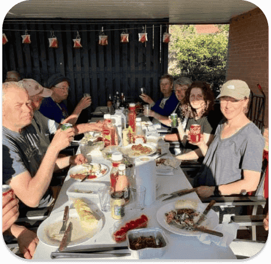
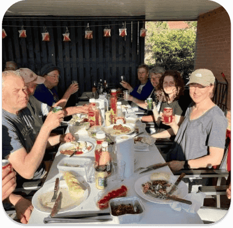

Træningsløb for alle aldre og niveauer
RSOK laver hver lørdag - næsten da, for selvfølgelig er der lidt pause i sommerferie og henover jul og nytår - et såkaldt træningsløb. Konceptet er enkelt og nemt. Man mødes forskellige stederfra gang til gang, så man ikke løber i det samme skovområde hver lørdag - se kalender og startsteder på websitet - med start mellem klokken 13 og 13:30. Der er typisk 4-5 forskellige baner i forskellig længde og sværhedsgrad, og der er altid folk tilstede, som kan og gerne vil hjælpe og vejlede, hvis du eller I er nye i sporten eller blot har lyst til at prøve en tur i skoven med mål og mening. Senere, når deltagerne er kommet tilbage, går snakken ivrigt med ligesindede og gode venner i RSOK


 

 <
<